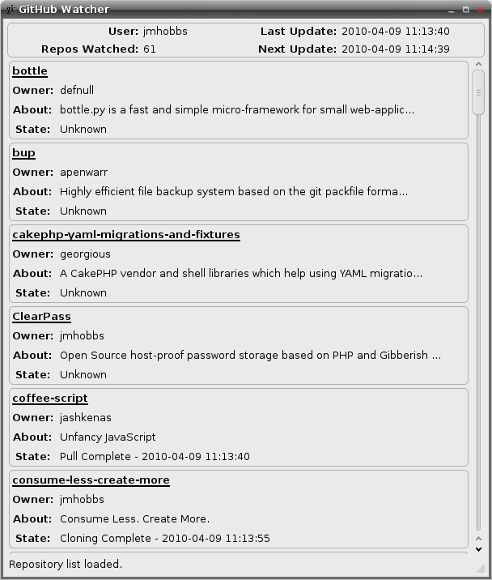

Github Watcher is a GTK+ desktop application that monitors your Github watch list and keeps a synced copy of each watched repository on your local machine.
It's not really ready for consumption. It does everything it is supposed to, up to a point. I haven't got it all the way debugged, and to be honest it needs some re-writes because I was in a hurry the first time. But it will download and sync your repos, just not consistently over a long period of time.
There may be others I'm not remembering, but here are some definites.
* Python 2.5-ish
* py-github
* Git Python
* PyGTK 2.0
* A Unix type system

Clone the repo and run watcher.py
Copyright (c) 2010 John Hobbs Permission is hereby granted, free of charge, to any person obtaining a copy of this software and associated documentation files (the "Software"), to deal in the Software without restriction, including without limitation the rights to use, copy, modify, merge, publish, distribute, sublicense, and/or sell copies of the Software, and to permit persons to whom the Software is furnished to do so, subject to the following conditions: The above copyright notice and this permission notice shall be included in all copies or substantial portions of the Software. THE SOFTWARE IS PROVIDED "AS IS", WITHOUT WARRANTY OF ANY KIND, EXPRESS OR IMPLIED, INCLUDING BUT NOT LIMITED TO THE WARRANTIES OF MERCHANTABILITY, FITNESS FOR A PARTICULAR PURPOSE AND NONINFRINGEMENT. IN NO EVENT SHALL THE AUTHORS OR COPYRIGHT HOLDERS BE LIABLE FOR ANY CLAIM, DAMAGES OR OTHER LIABILITY, WHETHER IN AN ACTION OF CONTRACT, TORT OR OTHERWISE, ARISING FROM, OUT OF OR IN CONNECTION WITH THE SOFTWARE OR THE USE OR OTHER DEALINGS IN THE SOFTWARE.
John Hobbs (john@velvetcache.org)
John Hobbs (john@velvetcache.org)
You can download this project in either zip or tar formats.
You can also clone the project with Git by running:
$ git clone git://github.com/jmhobbs/github-watcher